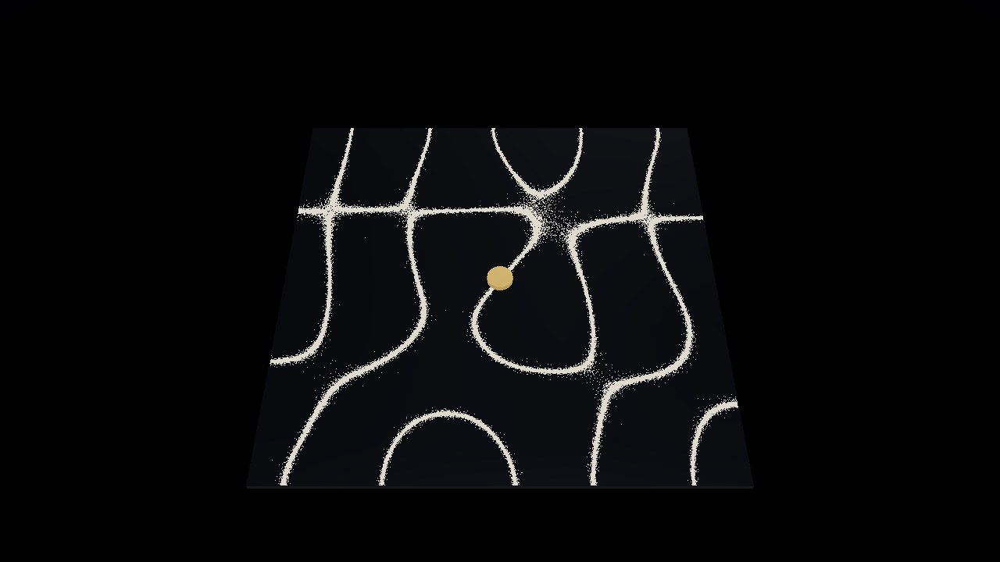
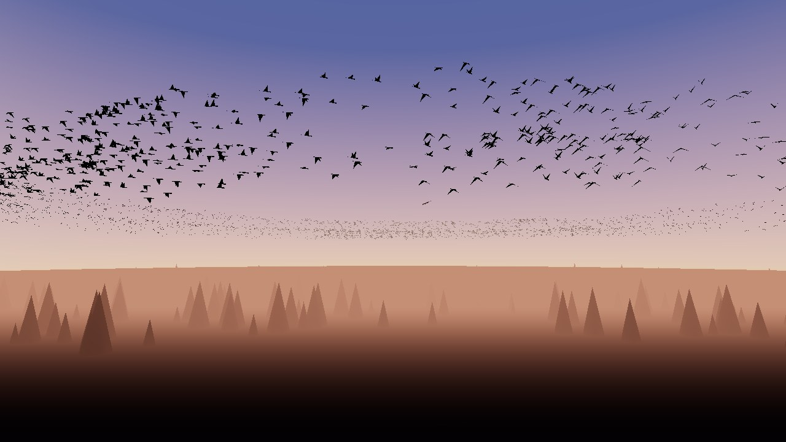
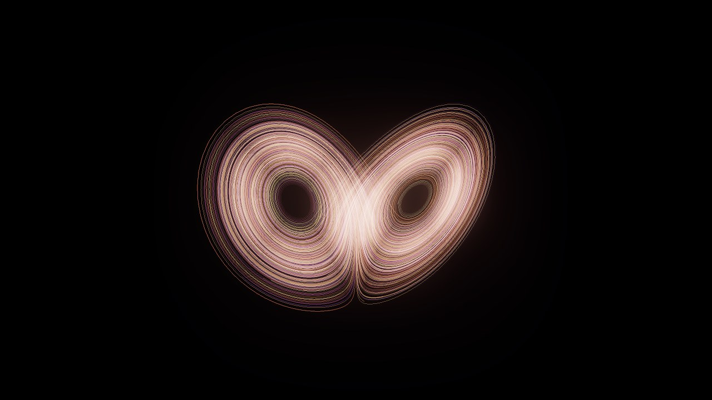
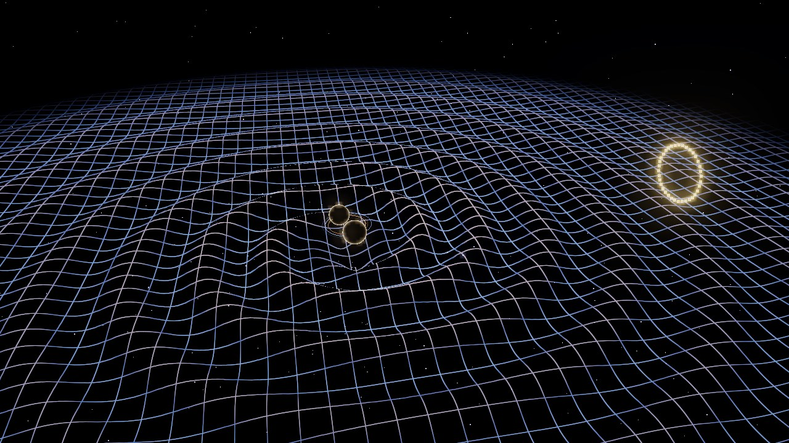
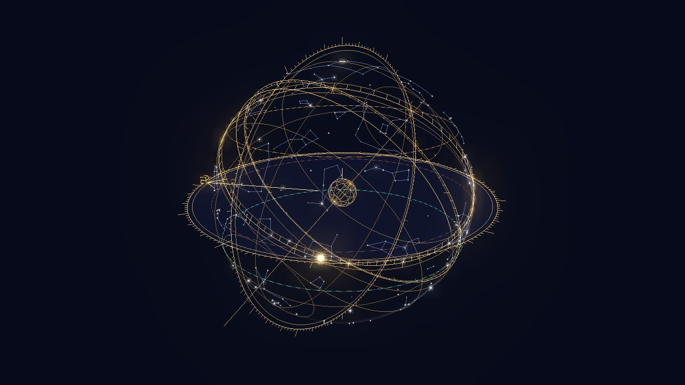
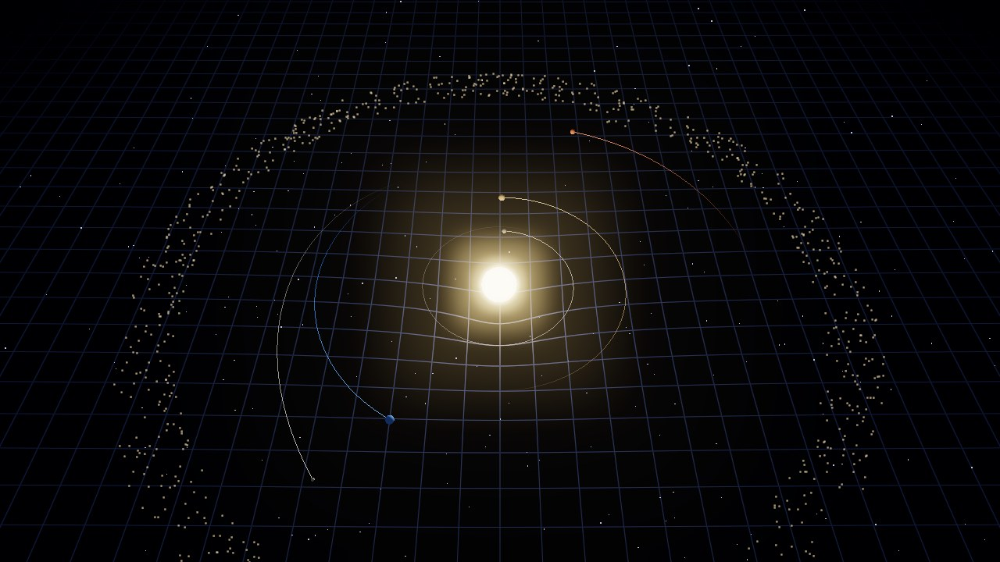
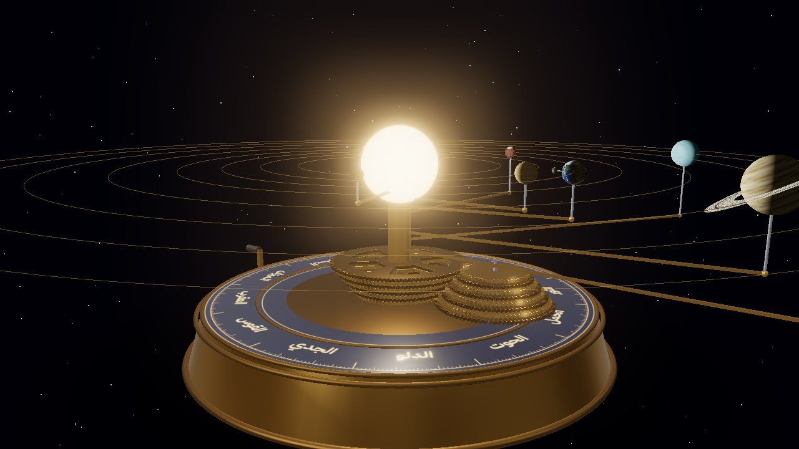
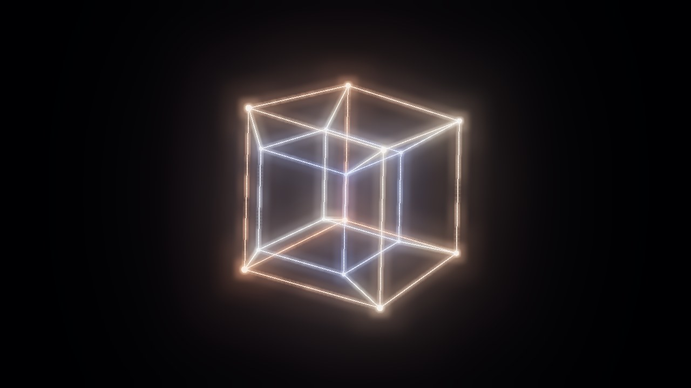

المعروضات مرتّبة من الأصغر إلى الأكبر: من عُشر نانومتر إلى مئة ألف سنة ضوئية، ثم شكل لا حجم له.
-
10−10 م

ذرة الهيدروجين
إلكترون واحد حول بروتون واحد، مرسوم من حل معادلة شرودنغر. ركّب حالتين فوق بعضهما وشاهد السحابة تتأرجح، فهذا التأرجح هو ما يُطلق الضوء.
افتح التجربة -
10−1 م

لوحة كلادني
رمل على لوح معدني يهتز بنغمة واحدة، فيهرب من المناطق المهتزة ويستقر على الخطوط الساكنة. غيّر النغمة واسمعها، وشاهد الرمل يرسم شكلاً جديداً عند كل رنين.
افتح التجربة -
102 م

سرب الطيور
آلاف الطيور، كل منها يراقب سبعة من جيرانه فقط ولا قائد بينها، ومن ثلاث قواعد بسيطة يخرج سرب يتموّج ككائن واحد. أطلق الصقر وشاهد موجات الهروب.
افتح التجربة -
104 م

الفوضى
ثلاث معادلات من نموذج للطقس ترسم جناحي فراشة لا يمر مسارها بالنقطة نفسها مرتين. أطلق مسارين متلاصقين وشاهدهما يفترقان: هذا سبب عجزنا عن توقع الطقس بعد أيام.
افتح التجربة -
105 م

موجات الجاذبية
ثقبان أسودان يدوران ويقتربان حتى يندمجا، والزمكان يتموّج حولهما. اسمع «زقزقة» الاندماج كما التقطها مرصد LIGO عام ٢٠١٥.
افتح التجربة -
107 م

ذات الحلق
سماؤك الحقيقية فوق مدينتك: نجوم بأسمائها العربية، وأوقات الصلاة تُقرأ من موضع الشمس، والقبلة. ثم تنفرد الكرة أمامك فتصير أسطرلاباً تستخدمه كما استخدمه الفلكيون.
افتح التجربة -
1010 م

الثقب الأسود
كل بكسل يتتبّع شعاع ضوء ينحني حول الثقب حسب النسبية العامة. القرص الذي تراه فوقه هو نفسه الذي خلفه، والجهة الأسطع مقبلة نحوك بنصف سرعة الضوء.
افتح التجربة -
1011 م

ساحة الجاذبية
ارمِ نجوماً وكواكب بيدك وشاهد قانون نيوتن وحده يصنع المدارات والاصطدامات والفوضى. جرّب رقصة الثمانية ونقاط لاغرانج.
افتح التجربة -
1013 م

المجموعة الشمسية
آلة نحاسية بتروس تحرك الكواكب إلى مواقعها الفعلية في أي تاريخ. أدر المقبض بيدك، وشاهد المريخ يرجع إلى الخلف في السماء.
افتح التجربة -
1021 م

تصادم مجرتين
ربع مليون نجمة، أو مليون إن احتمل جهازك، تتحرك بالجاذبية وحدها. أذرع حلزونية تتمزق، وذيول من النجوم طولها مئات آلاف السنين الضوئية.
افتح التجربة -
∞

البعد الرابع
أشكال من أربعة أبعاد تدور في اتجاهات لا يتخيلها العقل، وما تراه ظلالها في عالمنا. ومعها شرائحها حين تعبر عالمنا، وتليّف هوبف بدوائره المتشابكة.
افتح التجربة